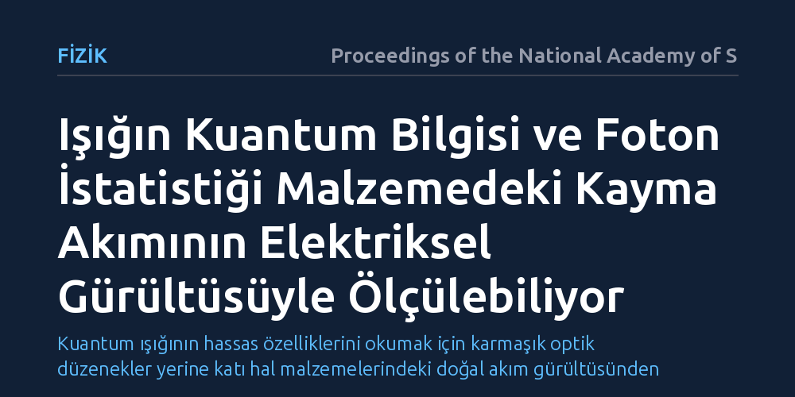

FIZIK · Proceedings of the National Academy of Sciences · 2026-10-17
Araştırmacılar, kuantum ışığındaki dalgalanmaların taşıdığı bilginin doğrudan bir elektrik sinyaline nasıl dönüştürülebileceğini inceledi. Çalışma, merkezcil simetrisi olmayan kristallerde oluşan kayma akımının elektriksel vuruş gürültüsünün, gelen ışığın foton istatistiğini ve kuantum Fisher bilgisini doğrudan ele verdiğini gösterdi.
Kuantum ışığının hassas özelliklerini okumak için karmaşık optik düzenekler yerine katı hal malzemelerindeki doğal akım gürültüsünden yararlanılabileceğini gösteriyor.

Kuantum teknolojilerinde ışık, sahip olduğu kuantum halleri sayesinde benzersiz bir bilgi taşıyıcısıdır. Fotonların kuantum seviyesindeki dalgalanmaları; kuantum metrolojisinden güvenli haberleşmeye kadar pek çok alanda kritik veriler barındırır. Ancak bu dalgalanmalarda gizlenen kuantum bilgisini doğrudan, kayıpsız ve pratik biçimde ölçülebilir bir elektrik sinyaline aktarmak temel bir zorluk olarak varlığını sürdürüyor.
Günümüzde kuantum ışık hallerini ölçmek için çoğunlukla homodin algılama ya da süperiletken tek foton dedektörleri gibi karmaşık ve hassas optik düzenekler gerekiyor. Katı hal malzemelerinin üzerine düşen kuantum ışığını doğrudan algılayıp bu bilgiyi kendi elektriksel tepkisine aktarabilmesi, aygıtları basitleştirmek adına uzun süredir araştırılan bir hedeftir.
Araştırmacılar bu sorunun yanıtını ararken kristal yapısında tersinme simetrisi bulunmayan malzemelere odaklandı. Bu tür simetrisiz kristallerde dışarıdan voltaj uygulanmasa bile ışık soğurulduğunda elektron dalga paketlerinin yer değiştirmesiyle 'kayma akımı' (shift current) adı verilen doğrusal olmayan bir elektrik akımı doğar.
Çalışmada açık kuantum sistemleri kuramı ile kuantum taşınım istatistiği araçları bir araya getirildi. Araştırmacılar analitik modeller kurarak, gelen ışığın kuantum halleri ile malzemenin ürettiği akımdaki istatistiksel dalgalanmalar (vuruş gürültüsü) arasındaki bağıntıyı matematiksel olarak modelledi.
Yapılan kuramsal türetimler, kayma akımının ürettiği elektriksel vuruş gürültüsünün (shot noise) yalnızca elektronların rastgele geçişlerini yansıtmadığını ortaya koydu. Bu akım gürültüsü, üzerine düşen ışığın Poisson altı dağılımı gibi klasik olmayan özelliklerini doğrudan kendi yapısına kodluyor.
Ayrıca araştırmacılar, bir kuantum durumunun parametre duyarlılığını ve ulaşılabilecek en yüksek ölçüm kesinliğini belirleyen Kuantum Fisher bilgisinin de bu elektriksel gürültü spektrumu üzerinden doğrudan elde edilebildiğini gösterdi. Kısacası ışığın kuantum doğası, malzemenin akım dalgalanmalarına birebir yansıyor.
Bu sonuç, kuantum optiği ile katı hal elektroniği arasında yeni bir köprü kuruyor. Kuantum ışık kaynaklarının incelenmesi için büyük optik laboratuvar düzenekleri yerine, mikroçip ölçeğindeki ferroelektrik veya iki boyutlu kristal tabanlı algılayıcıların kullanılabileceğine işaret ediyor.
Bununla birlikte çalışmanın kuramsal bir model olduğunu ve henüz laboratuvarda deneysel olarak sınanmadığını unutmamak gerekir. Gerçek malzemelerde ortaya çıkacak ısıl gürültü ve kristal kusurlarının bu kuantum sinyalini ne derece perdeleyeceği gelecekteki deneylerle netleşecek.